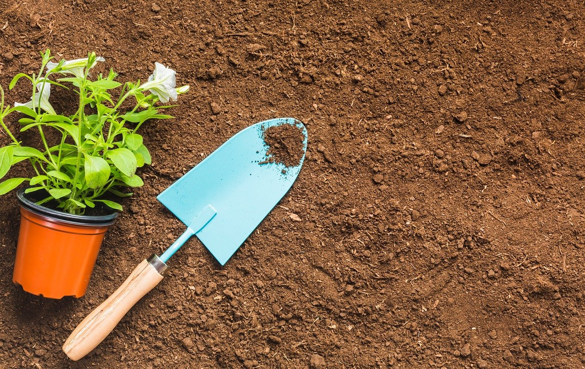
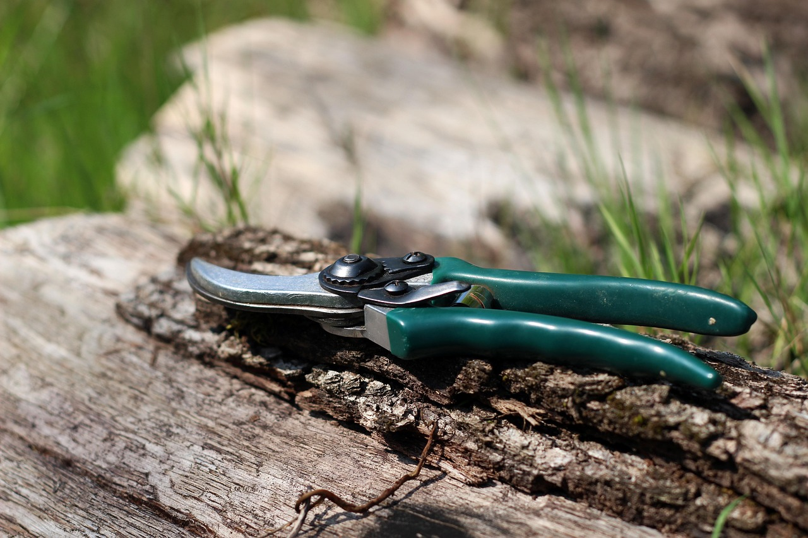
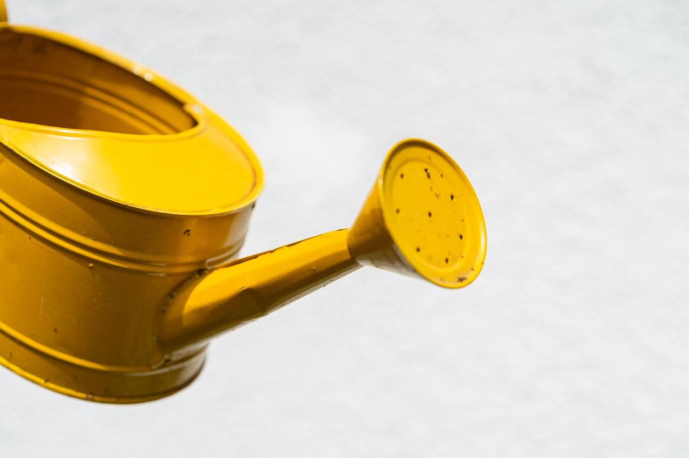
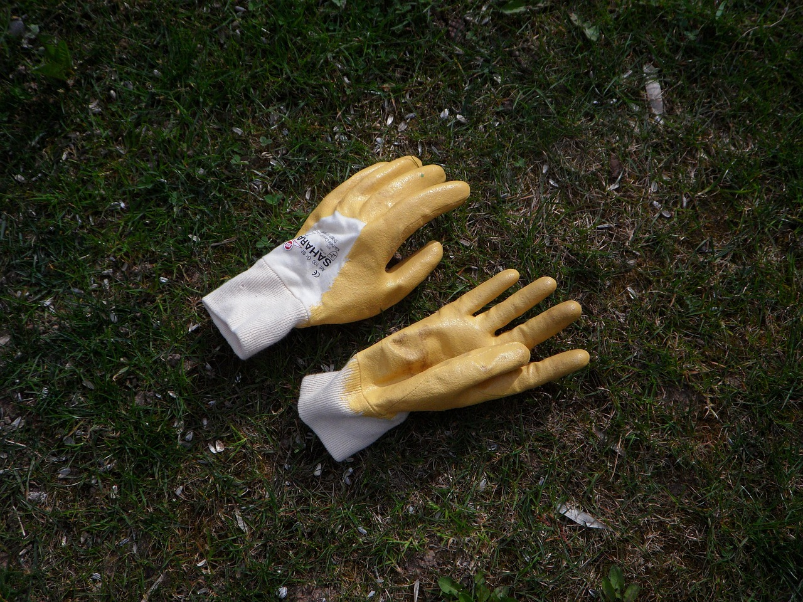
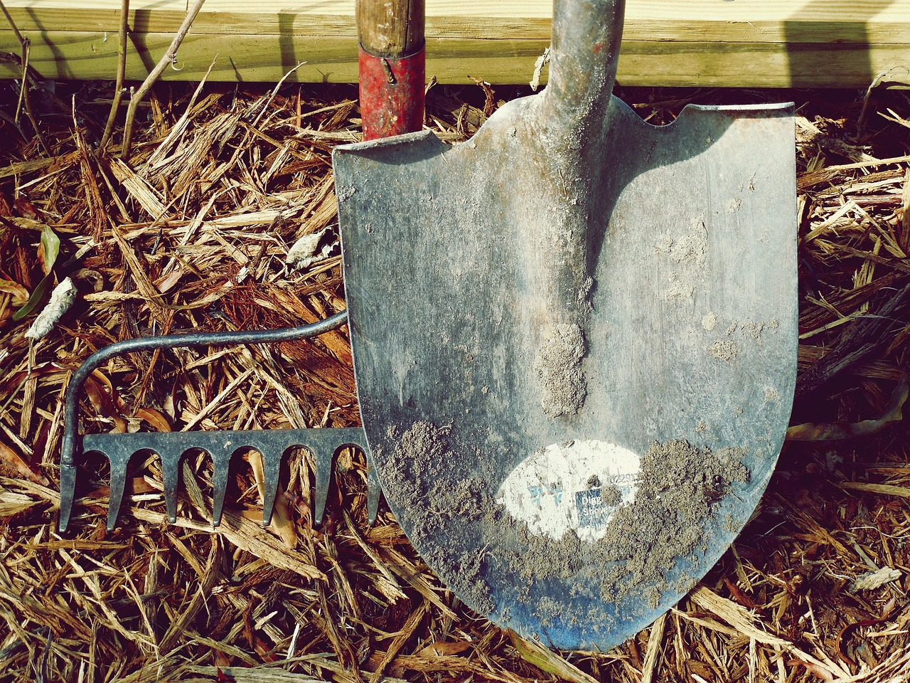

Essential Gardening Tools

Hand Trowel
Perfect for planting, transplanting, and digging small holes.
 Pruning ShearsUsed to trim plants and keep your garden neat and healthy.
 Watering CanProvides gentle watering for seedlings and small plants.
 Garden GlovesProtect your hands while working in soil or with tools.
 Shovel & RakeEssential for soil preparation, leveling, and cleanup.
Setting Up Your Garden
Choose a location with good sunlight, prepare your soil, and arrange your tools for easy access.